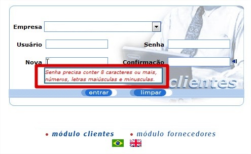

Autenticação
Autenticação com senha forte
A partir da versão 341.1.5, os usuários Comprador, Empresa, Fornecedor e Programador poderão ser forçados a adicionar uma senha forte com o os seguintes requisitos: senha com mínimo de oito caracteres, números e ao menos uma letra maiúscula e minúsculas.
Essa melhoria deverá ser liberada através dos parâmetros de configuração mediante solicitação, e será exibida para o usuário na alteração de senha na tela de login ou na tela de gerenciamento de seu respectivo usuário conforme a imagem abaixo.
Primeiro login
A partir da versão 341.1.5 os usuários Comprador, Empresa, Fornecedor e Programador que forem cadastrados ou que tiverem a senha alterada serão definidos como usuários de primeiro login, tendo dessa forma que redefinir sua senha ao tentar efetuar o primeiro acesso no sistema.
No caso da alteração de senha de um usuário através de outro que tenha autorização para executar tal procedimento, como por exemplo a seguinte situação: Um usuário fornecedor esqueceu a senha e precisa redefini-la , para isso solicitou a um usuário comprador que fizesse a redefinição. Ao entrar na tela de gerenciamento de fornecedor o usuário comprador não precisará definir uma senha forte para o comprador , mas ao executar o login com a senha alterada pelo comprador, o fornecedor deverá redefinir a senha no seu primeiro acesso.
Bloqueio de senha.
A partir da versão 341.1.5 os usuários Comprador, Empresa, Fornecedor e Programador terão suas senhas bloqueadas, e uma imagem de erro será mostrada informando o bloqueio caso o numero de erros de login ultrapasse 4 tentativas conforme imagem abaixo.

Para que o desbloqueio seja feito, os usuários que possuam acesso no gerenciamento do usuário bloqueado, deverão redefinir a senha para que o usuário bloqueado entre novamente no sistema e altere sua senha, conforme explicado no item de primeiro login.